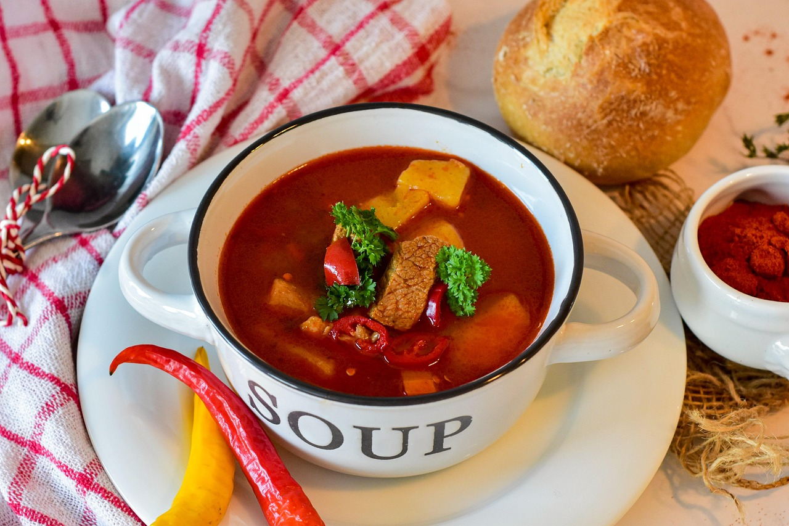
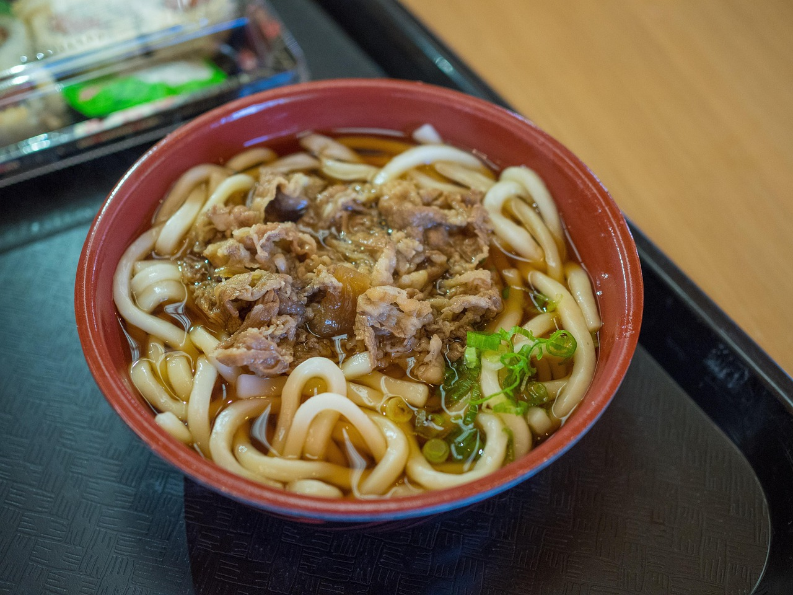
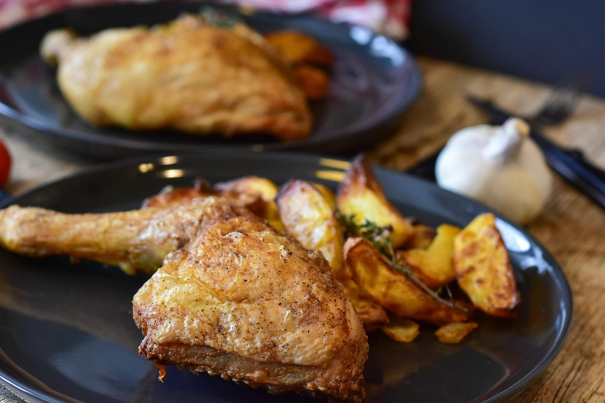
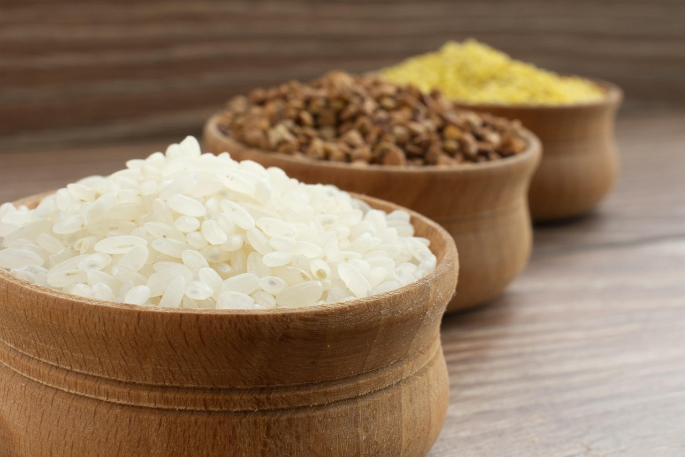
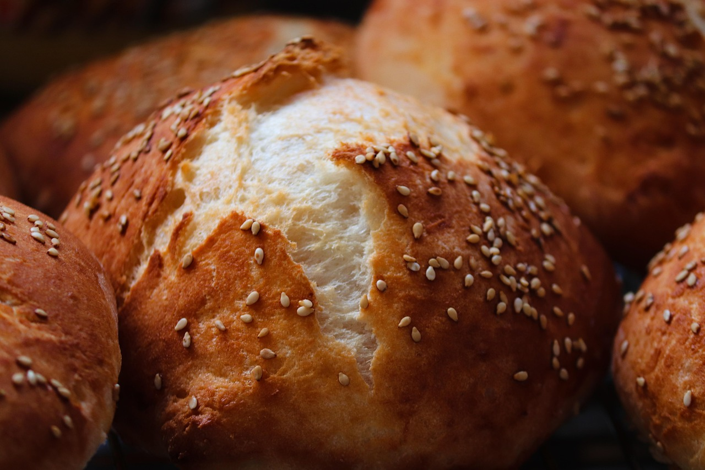

Introduction
太行山脚下的风味人间
新乡地处中原，南太行山脚下，美食融合了豫菜的传统与山野的质朴。这里不仅有享誉中原的红焖羊肉，还有获嘉饸饹面、太行山地锅鸡等特色美食。山中采摘的野菜、小米等食材，更是赋予了新乡美食独特的地域风味。
以下精选新乡及南太行地区最值得品尝的7道美食，每一道都承载着这片土地的记忆与温度。
Signature Dishes
必吃推荐

🍖 红焖羊肉
新乡的头号招牌美食，起源于晚清时期。选用本地山羊，以老汤文火慢炖，肉质酥烂入味，筋软香浓。红焖羊肉的汤汁浓郁微辣，配以白萝卜和粉条，是冬日暖身的绝佳选择。
推荐：新乡市区老字号饭店
🍜 获嘉饸饹面
获嘉县的特色面食。面条用饸饹床子压制而成，口感筋道爽滑。羊肉汤底浓郁鲜香，加一勺红油辣子，撒上蒜苗和香菜，一碗下肚，酣畅淋漓。获嘉人早餐就吃饸饹面，可见其受欢迎程度。
推荐：获嘉县城老街
🥟 太行山地锅鸡
南太行山区的农家招牌菜。小泥炉架铁锅，放入散养土鸡和秘制酱料慢炖，锅边贴上一圈玉米面饼。鸡肉酱香浓郁，面饼吸饱汤汁后外焦里嫩，一锅两吃，是山里人待客的最高礼遇。
推荐：八里沟/万仙山景区农家乐
🌾 太行山小米焖饭
辉县太行山区特产小米，用铁锅焖制而成。小米粒粒分明，锅底的"锅嘎巴"是整锅饭的精华，焦香酥脆。配以土豆、豆角、粉条等山野食材一同焖煮，简单质朴却回味悠长。
推荐：山区农家乐
🥮 牛忠喜烧饼
新乡独有，百年老字号。烧饼外皮酥脆，层层起酥，内馅有咸甜两种：咸口是葱花肉末，甜口是红糖芝麻。刚出炉的烧饼香气四溢，咬一口酥掉渣，是新乡人从小吃到大的味道。
推荐：新乡市区牛忠喜烧饼店
🥗 太行山蒸野菜
春天太行山里的野菜是最鲜美的。茵陈、灰灰菜、山韭菜、香椿等山野时蔬采摘后洗净拌面蒸制，蘸蒜汁或辣椒油食用。原汁原味的山野清香，是城里吃不到的天然味道。
推荐：春季到访·景区农家乐🍲 太行山地锅大烩菜
山里人叫"老锅菜"，是南太行最具代表性的农家菜。白菜、老豆腐、山菌、粉条、卤肉片，一锅乱炖，柴火地锅慢煨。看似粗犷却滋味醇厚，浇在小米焖饭上，让人连吃三碗。
推荐：景区农家乐·提前预订